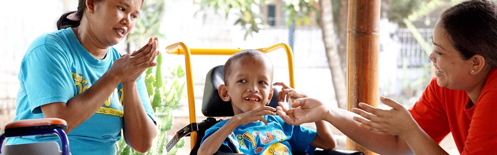

Physiotherapy is a science that focuses on stabilizing or improving the motor/body function disorders, followed by the process/method of motion therapy. According to Minister of Health Decree of the Republic of Indonesia No. 778 Year 2008 on Guidelines for Physiotherapy in Healthcare Services, physiotherapy is a healthcare service intended for the individuals and groups in an effort to develop, maintain, and restore movements and functions throughout the individual life cycle through the use of physical modality, physical agent, mechanism, motion, and communication. In physiotherapy, patients can be trained through specific sports, stretching, and a variety of techniques and special tools to help solve the problems faced by them.
Occupational Therapy is a form of healthcare to patients with physical and/or mental disorders using selected or targeted exercises/activities (occupational) to improve the independence of the individuals in the area of daily life activities, productivity and utilization of spare time, in order to increase the degree of public health. The main goal of occupational therapy is to enable individuals to participate in everyday activities. Occupational therapists may achieve this goal by working with groups and communities to enhance their ability to engage in activities they want, need, or expect to involve in, as well as by altering the activities or environment to support their involvement in such conditions.
Speech therapy is a therapy given to help a person communicate more clearly. This therapy is usually provided to:
Special Education
Learning program designed to respond or meet the needs of children with unique characteristics, which cannot be fulfilled by the standard (ordinary) school curriculum. Definition of Special Education can be interpreted as the Special Class, Special Program and/or or Special Services designed to meet the educational aspect of children with special needs.
Administer various multivitamins to all children, especially those in unhealthy conditions.
Conduct and monitor the nutrition improvement programs for children who are malnourished.
Conduct routine therapy or treatment for children who have seizures.
Conduct medical treatment for children who suffer from cough, cold, fever, or other diseases.
Special Education
Learning program designed to respond or meet the needs of children with unique characteristics, which cannot be fulfilled by the standard (ordinary) school curriculum. Definition of Special Education can be interpreted as the Special Class, Special Program and/or or Special Services designed to meet the educational aspect of children with special needs.
Thomas Huis Steenwijk is an organization that provides social care for disabled individuals in Netherlands. A member of the American Women Association, Diane White, introduced Heesu Foundation to Mrs. Henriette Koenen, which is one of the board members of Thomas Huis. After discussions with other members of the board, she finally gave us good news that Thomas Huis was willing to contribute for Heesu Foundation.
Thomas Huis donate regularly each month to partially support the foundation's operational activities. They are also interested in Heesu Foundation's annual program to provide assistance to local community who are in need. Our surrounding neighborhoods are considered a substantial part of Heesu Foundation that should be appreciated for their favor, as they have regarded Heesu as part of Situsari Village. In 2014, after a discussion with Mrs. Henriette Koenen, we agreed to hold an Open House event to invite the local community and served free snacks, donated free staple foods, arranged a simple talent show event of Heesu's foster children and the employees, as well as inviting Sasha, a child singer, to perform. The event was held on February 22nd, 2014. All board of Thomas Huis Foundation came straight from the Netherlands to attend this event. Meanwhile, Heesu Foundation's board from PT. Jaya Samudra Karunia also attended this Open House event.
Thomas Huis Steenwijk is an organization that provides social care for disabled individuals in Netherlands. They have been assisting Heesu Foundation since 2013. Since their first year of becoming a donator for Heesu, Thomas Huis has been holding several charity events for local community. In 2015, after they organized Heesu Open House event in 2014, Thomas Huis held free staple foods giveaway for local community and Heesu Foundation staffs. This served as a form of appreciation to the community and staffs for their compassion in helping Heesu by treating the children with disabilities thoroughly.
Seoul Chamber Society (SCS) is an orchestra musical group originating from South Korea. They consist of professional musicians who play classical genre. SCS visit was part of Korean Festival event organized by Korea Foundation. At that time, Heesu Foundation became one of the foundations that have been selected and contacted by Korea Foundation to hold the simple orchestra event. This served as a form of social charity within a series of events, as part of the 2013 Korean Festival. The event was also attended by representatives of Heesu Foundation board, which is PT. Jaya Samudra Karunia.
Each year, Heesu allocate charity programs for local community who are in need. Upon Idul Adha event, Heesu always arranges qurban, for which the qurban meats will be packaged and distributed to the neighborhoods afterward. The qurbani cows and goats were provided through charity by people who are willing to celebrate, while the slaughtering of qurbani animals was done by local religion leader and local community leader.
Heesu Foundation always allocate its annual program for local community in our surrounding area. In addition to holding qurban and donations of staple foods, we also seek to provide free medications for the people in need. In 2013, Heesu Foundation collaborated with Hilal Ahmar Organization Jakarta and Baitul Maal Abdirrahman bin Auf Jakarta Branch in providing free medications for the community. The medical team consisting of doctors and other staffs in medical field cooperated with Heesu Foundation's staffs, including a nurse working in our organization.